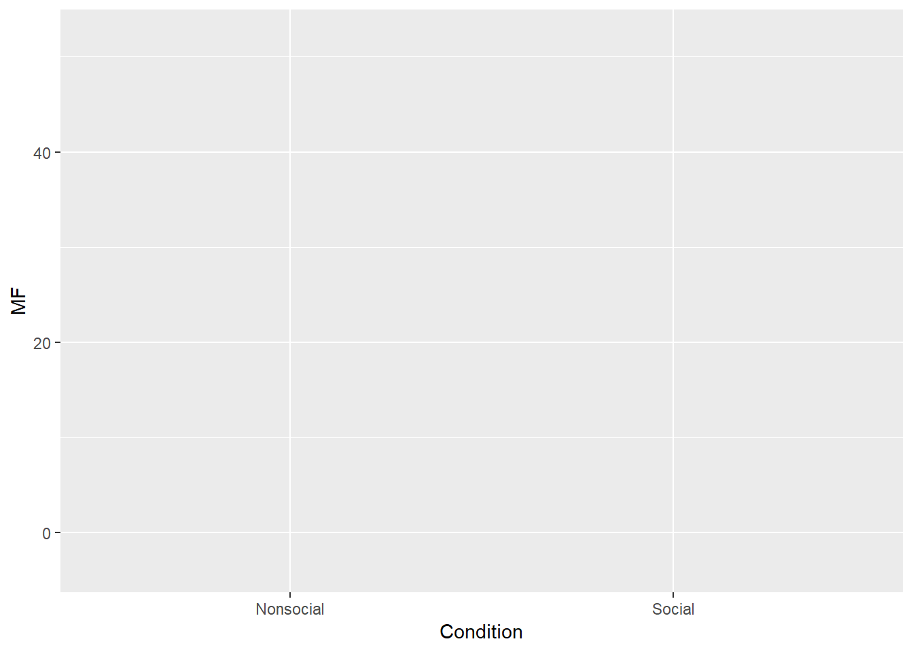

help(topic)
?topic
ls()
dir()
list.files()
save()
load()
data() This function allows you to search for pre-made data sets in r ex.
?data## starting httpd help server ... donedata()library(ggplot2)## Warning: package 'ggplot2' was built under R version 3.5.3Names <- rep(c("Dara", "Azalea", "Barbi", "Rowena", "Fiona"),each=2)
MF <- rnorm(10, 45, 25)
Condition <- rep(c("Social", "Nonsocial"), 5)
Aversity <- rep(c("A", "N_A"), times=c(4,6))
plot_df <- data.frame (Names, MF, Condition, Aversity)
ggplot(plot_df, aes(x=Condition, y=MF, group=Names,
linetype=Aversity))
read.table()
read.csv()
scan()
print() This function analyzes the results of your code (executing all the commands) ex.
data.frame(1,2,3,4)## X1 X2 X3 X4
## 1 1 2 3 4print(data.frame())## data frame with 0 columns and 0 rowscat()
write.table()
c() This function is used to combine elements (factors in a vectore for example)
from:to (where from and to are replaced with numbers, e.g. 1:10)
seq()
rep()
data.frame() This allows one to enter specific groups of data values ex.
data.frame(1, 2, 3, 5)## X1 X2 X3 X5
## 1 1 2 3 5list()
matrix()
factor()
rbind()
cbind() This funtion
x[n] nth element x[-n] all but nth element x[1:n] first n elements x[-(1:n)] elements from n+1 to the end x[c(1,4,2)] specific elements x[“name”] elements named “name” x[x>3] all elements greater than 3 x[x > 3 & x < 5] all elements between 3 and 5 x[x %in% c(“a”,“and”,“the”)] all elements in given set
x[n] list with elements n x[[n]] nt h element of the list x[[“name”]] element of the list named “name” x$name id.
x[i,j] element at row i, column j x[i,] row i x[,j] column j x[,c(1,3)] columns 1 and 3 x[“name”,] row named “name” Indexing data frames (matrix indexing plus the following) x[[“name”]] column named “name” x$nameid.
as.data.frame(x) as.numeric(x) as.logical(x) as.character(x)
1.is.na(x) 2.is.null(x) 3.is.data.frame(x) 4.is.numeric(x) 5.is.character(x) 6.length(x) 7.dim(x) This funtion provides the number of rows and columns in a data frame without the data
library(dplyr)## Warning: package 'dplyr' was built under R version 3.5.3##
## Attaching package: 'dplyr'## The following objects are masked from 'package:stats':
##
## filter, lag## The following objects are masked from 'package:base':
##
## intersect, setdiff, setequal, uniondf <- starwars
dim(df)## [1] 87 138.dimnames(x) This function lists the names of the categories in a data frame
library(dplyr)
df <- starwars
dimnames(df)## [[1]]
## [1] "1" "2" "3" "4" "5" "6" "7" "8" "9" "10" "11" "12" "13" "14"
## [15] "15" "16" "17" "18" "19" "20" "21" "22" "23" "24" "25" "26" "27" "28"
## [29] "29" "30" "31" "32" "33" "34" "35" "36" "37" "38" "39" "40" "41" "42"
## [43] "43" "44" "45" "46" "47" "48" "49" "50" "51" "52" "53" "54" "55" "56"
## [57] "57" "58" "59" "60" "61" "62" "63" "64" "65" "66" "67" "68" "69" "70"
## [71] "71" "72" "73" "74" "75" "76" "77" "78" "79" "80" "81" "82" "83" "84"
## [85] "85" "86" "87"
##
## [[2]]
## [1] "name" "height" "mass" "hair_color" "skin_color"
## [6] "eye_color" "birth_year" "gender" "homeworld" "species"
## [11] "films" "vehicles" "starships"9.nrow(x) 10.ncol(x) 11.class() 12.attributes()
which.max() which.min() which() sort() unique() table() sample()
max() This sets the maximum value included in a data set (and graph)
min() This set the minimum value included in a data set (and graph)
range() This determines the range of numbers considered in a graph
sum() This function adds all the numbers in a given set
mean() Creates the mean of a given set of number values
median() calculates the median of a set of numbers
var() sd() cor() round() abs()
t() diag() rowSums() colSums() rowMeans() colMeans()
apply() aggregate() Strings paste() strsplit() tolower() toupper
hist() This function creates a histogram graph of a given set of data
plot() This function creates a plot graph of a given set of data
rnorm() This function inserts a normal distribution
runif()
show that you can define a function show that you can write a for loop show that you can write a while loop show that you can write an if else statement Explain what return() does inside a function, show you can use it Explain what break() does, show you can use it
Use the packages tab in R-studio to install these packages. You will need to be connected to the internet when you do this. If you are installing on your laptop, or on R-studio Cloud, then these packages will not need to installed again.
ggplot2 dplyr shiny data.table reshape2 stringr